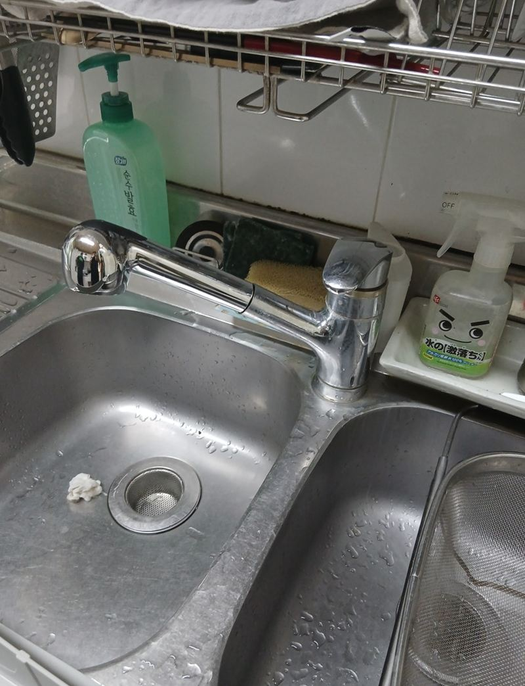
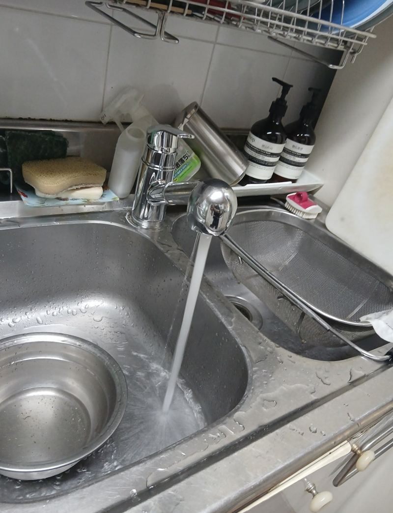
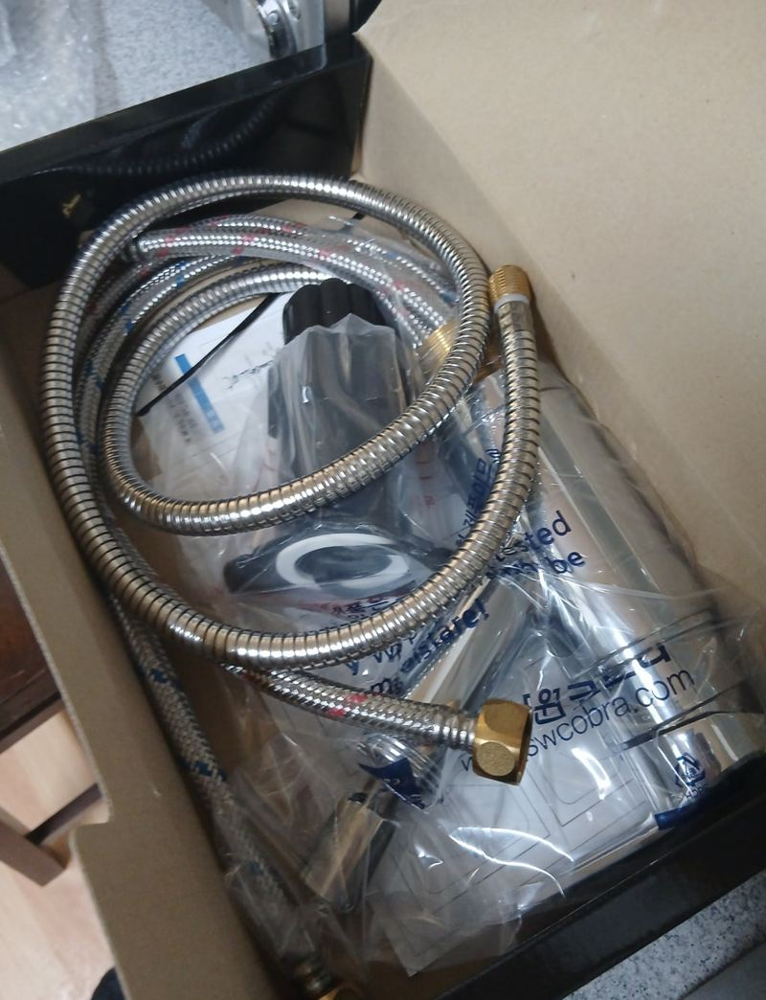
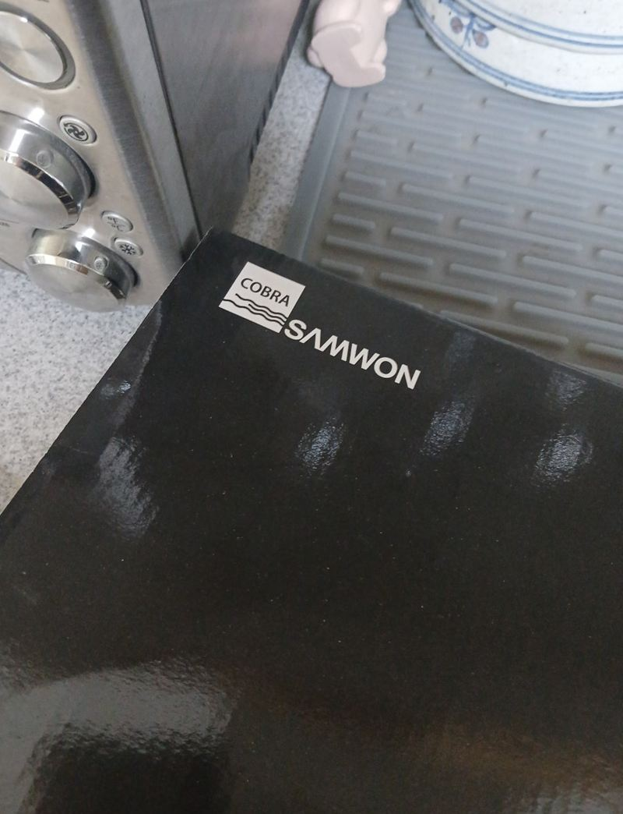
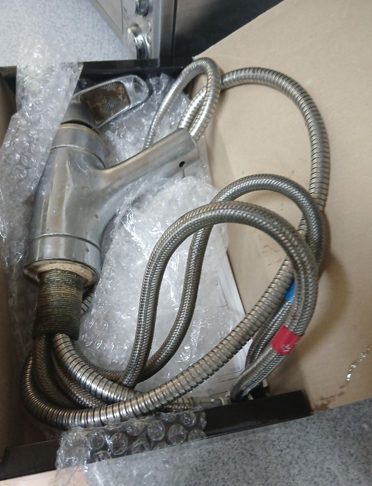
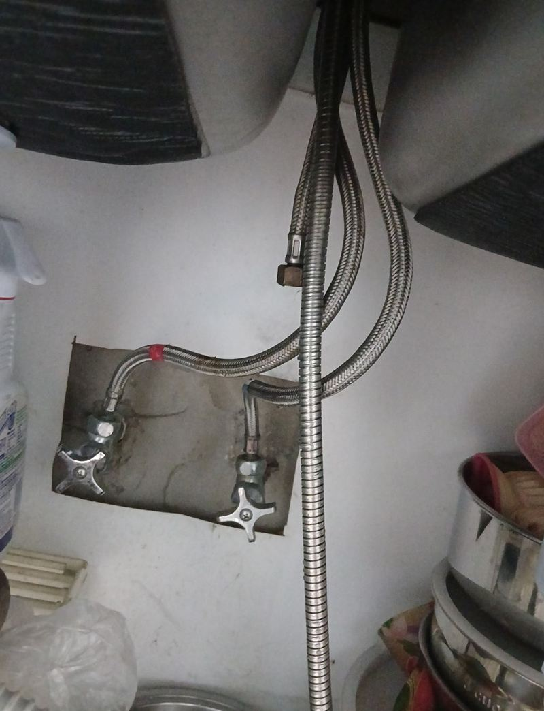
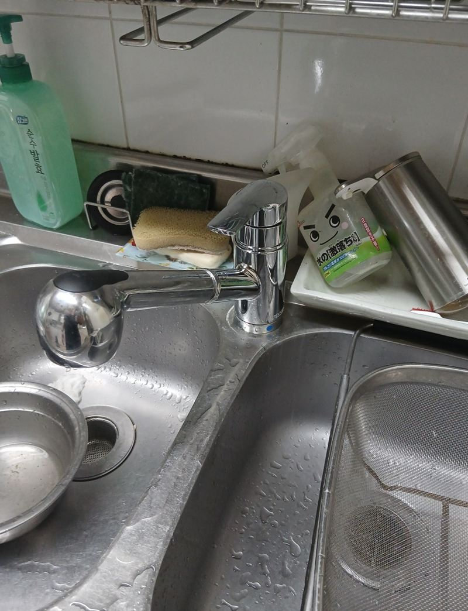

일산 주방 수전 물 샐 때 교체 시기와 방법

 교체 전교체 후
교체 전교체 후← 밀어서 전후 비교 →
"수전이 계속 조금씩 새서 아래에 바가지를 받쳐 놓고 지내요. 새로 바꾸면 괜찮아질까요?" 고양 일산 주택이었어요. 싱크대 아래 바닥에 물이 고이기 시작한 지 꽤 됐고, 하부장에서 냄새도 나고 있었어요. 수전을 오래 써서 아래 연결부가 삭고 굳어 있었어요. 하부장 안 공간을 비우고 고착된 호스와 본체를 떼어 낸 뒤, 구멍 규격에 맞는 새 수전을 달고 냉·온수 연결과 누수, 수압을 확인했어요.
| 현장 | 고양 일산서구 주택 주방 싱크대 |
|---|---|
| 증상 | 수전 아래로 물이 조금씩 새 하부장에 고임, 냄새 |
| 한 일 | 규격에 맞는 수전 준비 → 하부장 공간 확보 → 급수 호스 분리·본체 탈거 → 옛 실리콘 제거 → 새 수전 고정 → 냉·온수 연결 → 누수·수압 확인 → 실리콘 마감 |
| 범위 | 싱크볼은 그대로, 수전만 교체 |
주방 수전, 이럴 때 바꿔요
수전은 소모품이에요. 보통 7~10년쯤 쓰면 안쪽 고무 패킹이 뜨거운 물과 찬물, 수압을 반복해서 받으며 닳고, 금속도 조금씩 피로가 쌓여요. 처음엔 손잡이 아래에서 한두 방울 떨어지다가, 나중엔 아래 연결부로 새기 시작해요.
- 손잡이를 잠가도 물이 똑똑 떨어져요안쪽 카트리지가 닳은 신호예요.
- 하부장 바닥이 젖어 있어요아래 연결부나 호스에서 새고 있을 수 있어요.
- 물줄기가 갈라지거나 약해졌어요안쪽에 물때가 끼었거나 부품이 낡았어요.
- 손잡이가 뻑뻑하거나 헐거워요교체 시기가 가까워요.


물 새는 수전 교체 순서
새 수전 준비
싱크대 구멍 규격과 구조에 맞는 수전을 준비했어요.

옛 수전 떼기
낡은 수전은 아래 연결부가 삭거나 굳어 잘 안 풀려요. 하부장 안에 손이 들어갈 공간을 비우고, 급수 호스를 하나씩 분리한 뒤 본체를 뺐어요. 남은 실리콘도 깨끗이 긁어 냈어요.


새 수전 고정과 연결
아래에서 고정 브라켓을 단단히 조이고, 냉수·온수 호스를 방향에 맞게 연결했어요.

누수·수압 확인과 마감
물을 틀어 연결부에서 새는 곳이 없는지, 물줄기가 고르게 나오는지 보고 바깥 실리콘으로 마감했어요.
새는 수전을 그냥 두면
한두 방울이라도 매일 새면 하부장 바닥이 젖었다 마르기를 반복해요. 그러면 판재가 부풀고 썩기 시작하고, 곰팡이와 냄새, 벌레까지 생겨요. 이 집도 냄새가 나고 벌레가 꼬이기 시작했다고 하셨어요. 결국 하부장까지 손봐야 하면 일이 훨씬 커져요.
교체 후 고객분은 "그냥 조금 새는 줄 알았는데 냄새와 벌레까지 생겨 걱정했다, 이제 물이 안 새서 너무 좋다"며, 예전에 직접 부품을 사서 바꾸려다 실패한 적이 있어 이번엔 맡겼다고 하셨어요.
수전 고를 때 볼 것
새 수전은 싱크대에 난 구멍 크기와 개수에 맞아야 해요. 구멍이 하나인지 둘인지, 상판에 다는지 벽에서 나오는지에 따라 고를 수 있는 제품이 달라져요. 지금 수전 사진과 하부장 안쪽 사진이 있으면 맞는 제품을 바로 고를 수 있어요.
설거지를 많이 하는 집이라면 물줄기를 길게 뺄 수 있는 수전이 편해요. 다만 호스가 늘어나는 만큼 하부장 안에 여유 공간이 있어야 해요. 정수기 연결이 있는 집은 분기를 그대로 살려 이어 줘야 해서 교체 전에 알려 주세요.
주방 수전 교체 질문
카트리지만 바꿀 수는 없나요?
맞는 카트리지가 있으면 그것만 갈아요. 단종된 수전이면 본체째 바꾸는 쪽이 빨라요.
벽에서 나오는 수전도 바꾸나요?
벽 수전과 상판 수전 모두 해요. 사진으로 종류를 알려주세요.
길게 빼서 쓰는 수전으로 바꿀 수 있나요?
호스가 나오는 수전으로 바꿀 수 있어요. 하부장 안 공간을 확인해요.
하부장이 이미 부풀었어요.
판재 상태를 보고 바닥판 교체를 함께 상의해요.
정수기 연결은 그대로 두나요?
정수기 분기가 있으면 다시 이어서 연결해요.
욕실 수전도 하나요?
세면대 수전도 바꿔요. 함께 보면 한 번에 끝낼 수 있어요.
교체 후 물에서 냄새가 나요.
새 호스 냄새일 수 있어요. 처음엔 물을 잠시 흘려보낸 뒤 쓰세요.
다른 싱크볼·수전 현장
수전 위와 하부장 안 연결부를 찍어 보내 주세요.
전화 상담 010-4517-9872